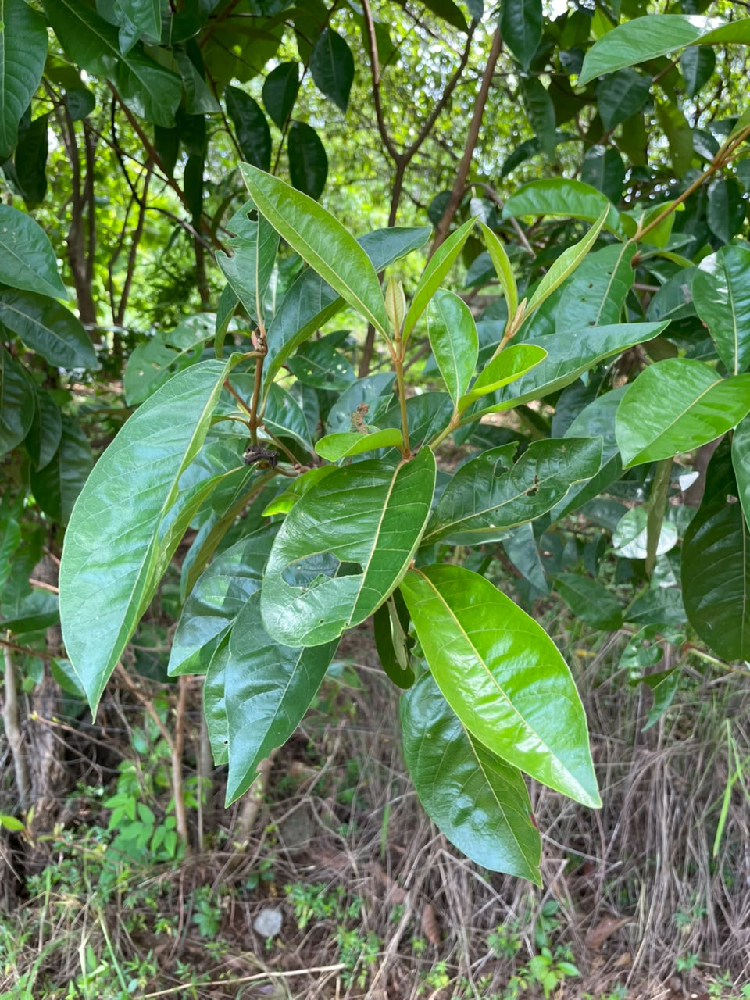
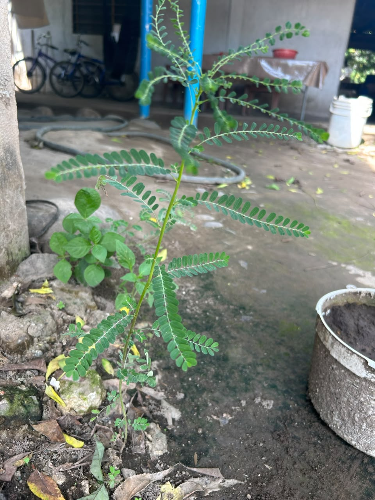
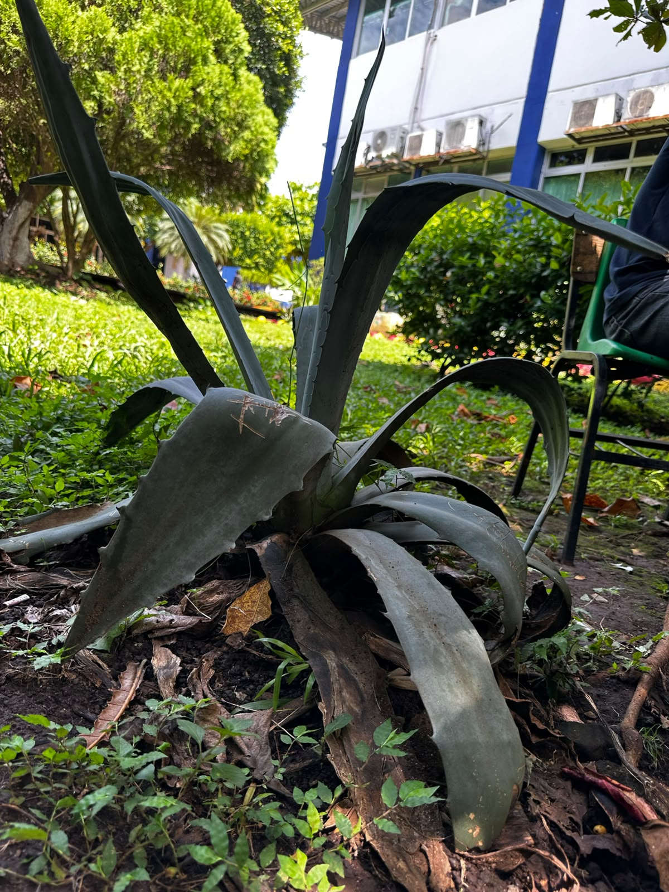
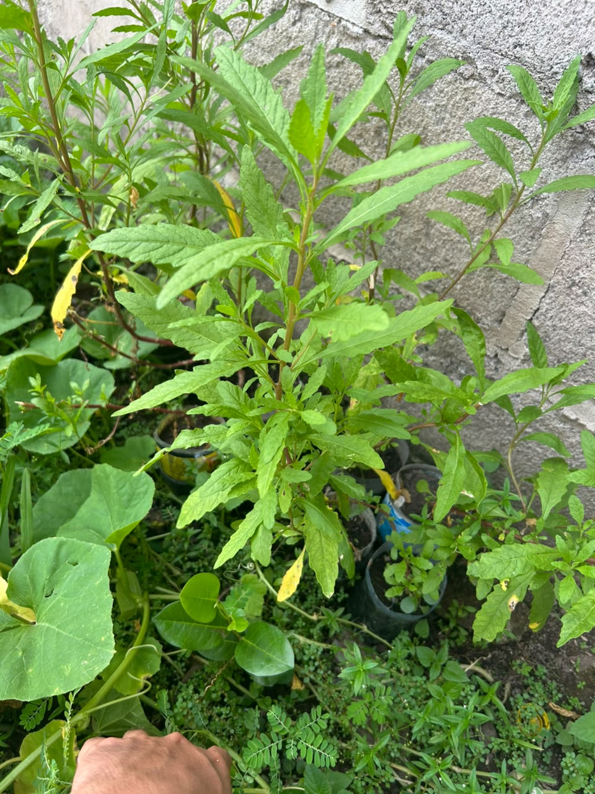
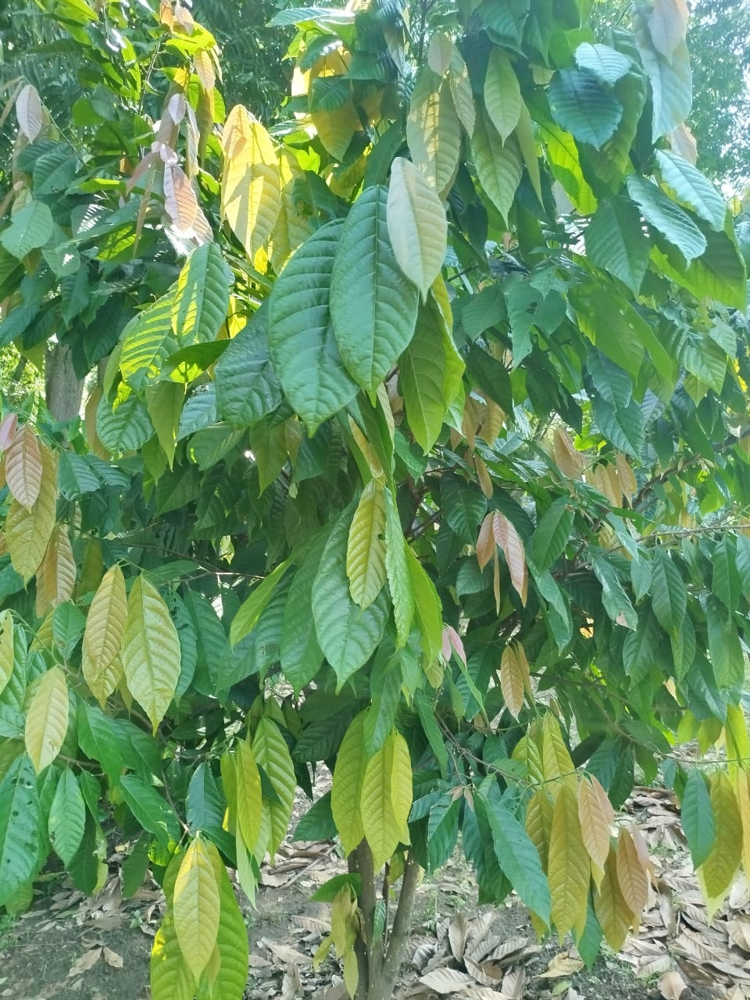
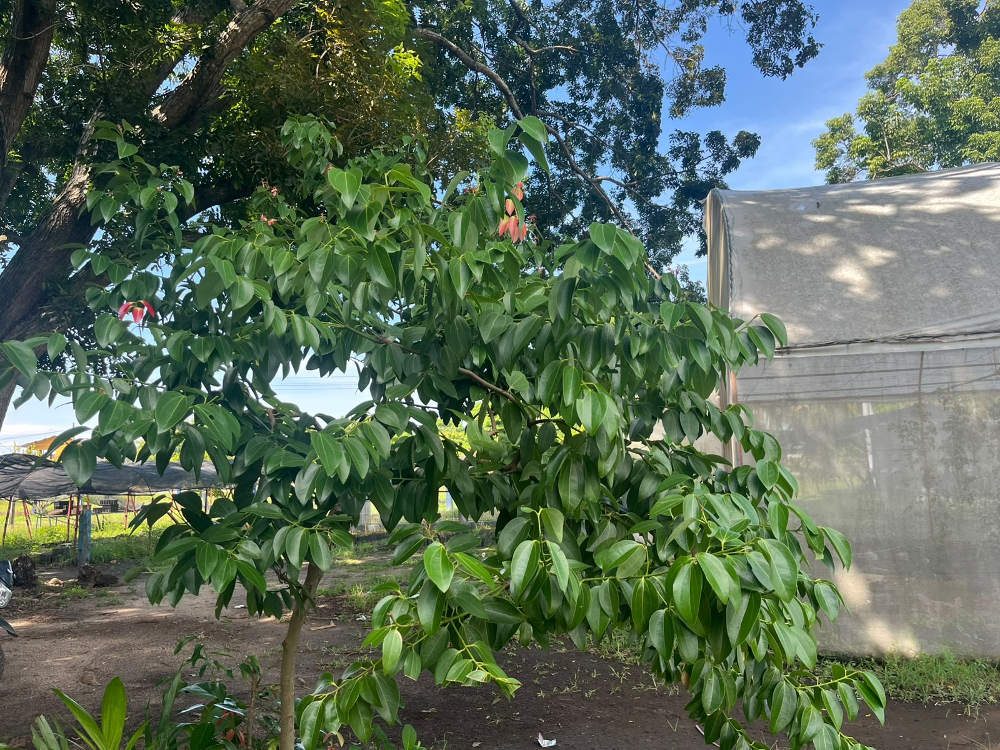

Guayaba
Psidium guajava L
Familia:Myrtaceae
Planta de uso medicinal , comestible y maderable
Ver información📍 Lugar donde fue encontrada
Municipio de Huehuetan, Chiapas.

Nim
Azadirachta indica
Familia: Meliaceae
Árbol de importancia leñosa y medicinal.
Ver información📍 Lugar donde fue encontrada
Municipio de Huehuetan, Chiapas.

Guanabana
Annona muricata
Familia: Annonaceae
Planta tropical cultivada por sus frutos.
Ver información📍 Lugar donde fue encontrada
Municipio de Huehuetan, Chiapas.

Mango Ataulfo
Mangifera indica
Familia: Anacardiaceae
Planta ampliamente conocida por sus usos tradicionales.
ver información📍 Lugar donde fue encontrada
Municipio de Huehuetan, Chiapas.

Nance
Brysomina crassifolia
Familia: Malpighiaceae
Planta tropical cultivada por sus frutos.
Ver información📍 Lugar donde fue encontrada
Municipio de Huehuetan, Chiapas.

Buganbilia
Bougainvillea
Familia: Nyctaginaceae
Planta tropical cultivada por sus frutos.
Ver información📍 Lugar donde fue encontrada
Municipio de Huehuetan, Chiapas.

Papaya
Carica papaya L
Familia: Caricaceae
Planta tropical cultivada por sus frutos.
Ver información📍 Lugar donde fue encontrada
Municipio de Huehuetan, Chiapas.

Piñon
Jatropha curcas.
Familia: Euphorbiaceae.
Planta tropical cultivada por sus frutos.
Ver información📍 Lugar donde fue encontrada
Municipio de Huehuetan, Chiapas.

Chipilincillo
Phyllanthus niruri
Familia: Phyllanthaceae.
Planta tropical cultivada por sus frutos.
Ver información📍 Lugar donde fue encontrada
Municipio de Mazatán, Chiapas.

Verbena Azul
Verbena hastata
Familia: Verbenaceae
Planta tropical cultivada por sus frutos.
Ver información📍 Lugar donde fue encontrada
Municipio de Huehuetan, Chiapas.

Marañon
Anacardium occidentale
Familia: Anacardiaceae
Planta tropical cultivada por sus frutos.
Ver información📍 Lugar donde fue encontrada
Municipio de Huehuetan, Chiapas.

Pan de palo
Artocarpus altilis
Familia: Moraceae
Planta tropical cultivada por sus frutos.
Ver información📍 Lugar donde fue encontrada
Municipio de Mazatán, Chiapas.

Capulin
Muntingia calabura.
Familia: Muntingiaceae
Planta tropical cultivada por sus frutos.
Ver información📍 Lugar donde fue encontrada
Municipio de Huehuetan, Chiapas.

Agave
Agave angustifolia
Familia: Asparagaceae
Planta tropical cultivada por sus frutos.
Ver información📍 Lugar donde fue encontrada
Municipio de Huehuetan, Chiapas.

Chico zapote
Manilkara zapota
Familia:Sapotaceae
Planta tropical cultivada por sus frutos.
Ver información📍 Lugar donde fue encontrada
Municipio de Huehuetan, Chiapas.

Tamarindo
Tamarindus indica
Familia: Fabaceae
Planta tropical cultivada por sus frutos.
Ver información📍 Lugar donde fue encontrada
Municipio de Huehuetan, Chiapas.

Maguey morado
Tradescantia spathacea
Familia: Commelinaceae
Planta tropical cultivada por sus frutos.
Ver información📍 Lugar donde fue encontrada
Municipio de Huehuetan, Chiapas.

Espada del rey
Dracaena trifasciata
Familia: Asparagaceae
Planta tropical cultivada por sus frutos.
Ver información📍 Lugar donde fue encontrada
Municipio de Huehuetan, Chiapas.

Almendro
Prunus amygdalus
Familia: Rosaceae
Planta tropical cultivada por sus frutos.
Ver información📍 Lugar donde fue encontrada
Municipio de Huehuetan, Chiapas.

Limon
Citrus × limon
Familia: Rutaceae
Planta tropical cultivada por sus frutos.
Ver información📍 Lugar donde fue encontrada
Municipio de Huehuetan, Chiapas.

Epazote
Dysphania ambrosioides
Familia: Amaranthaceae
Planta tropical cultivada por sus frutos.
Ver información📍 Lugar donde fue encontrada
Municipio de Mazatán, Chiapas.

Mamey
Pouteria sapota.
Familia: Sapotaceae
Planta tropical cultivada por sus frutos.
Ver información📍 Lugar donde fue encontrada
Municipio de Huehuetan, Chiapas.

Hierba mora
Solanum nigrum.
Familia: Solanaceae
Planta tropical cultivada por sus frutos.
Ver información📍 Lugar donde fue encontrada
Municipio de Huehuetan, Chiapas.

Cacao
Theobroma cacao L..
Familia: Malvaceae
Planta tropical cultivada por sus frutos.
Ver información📍 Lugar donde fue encontrada
Municipio de Huehuetan, Chiapas.

Canela
Cinnamomum verum
Familia: Lauraceae
Planta tropical que se ocupa la corteza del arbol.
Ver información📍 Lugar donde fue encontrada
Municipio de Huehuetan, Chiapas.
Sobre este proyecto
Esta página tiene como objetivo recopilar información sobre las plantas medicinales y comestibles encontradas en el municipio de Huehuetan , Chiapas.